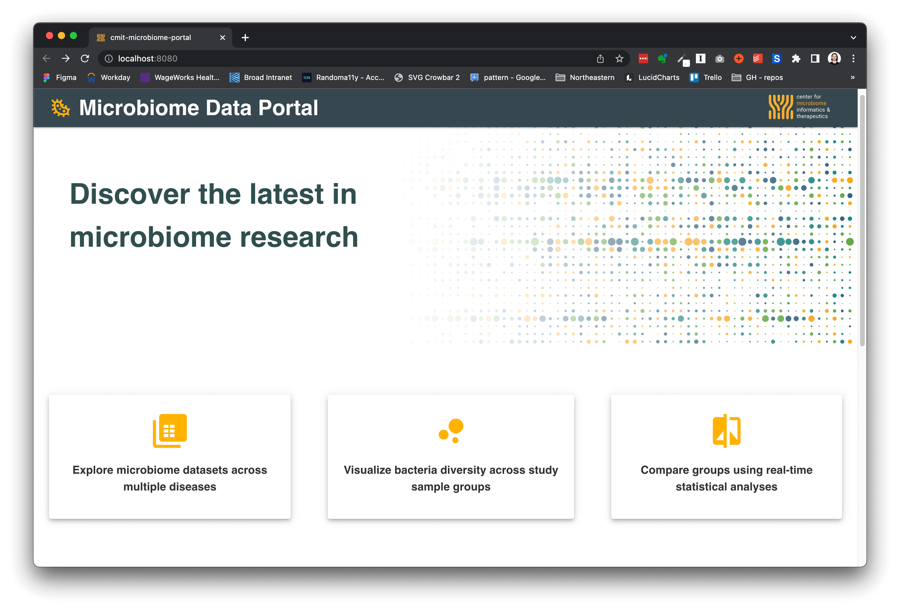
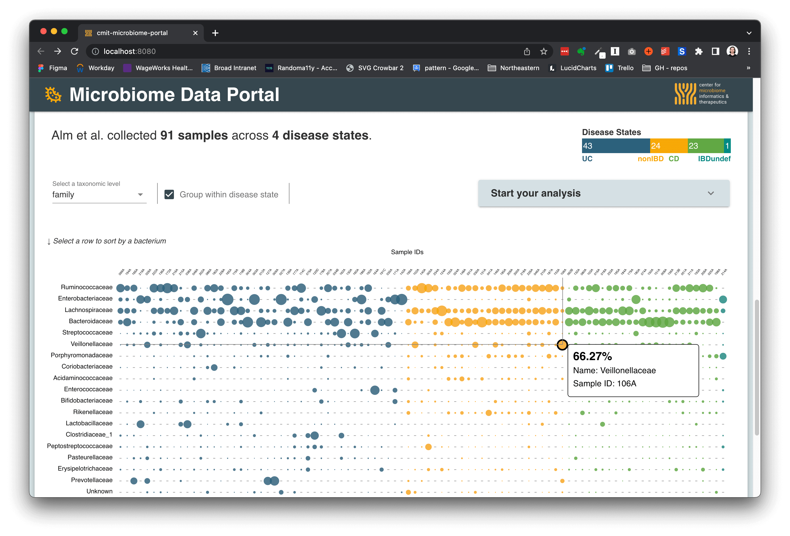
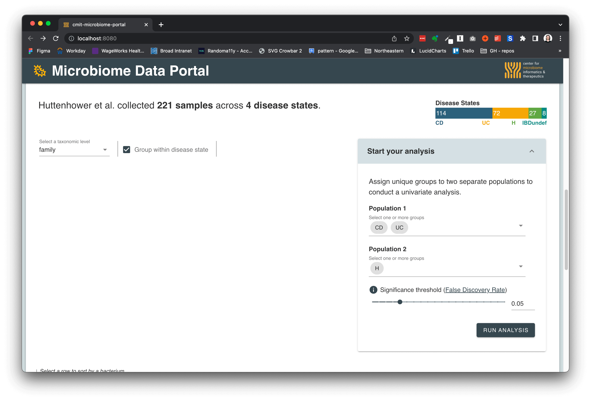
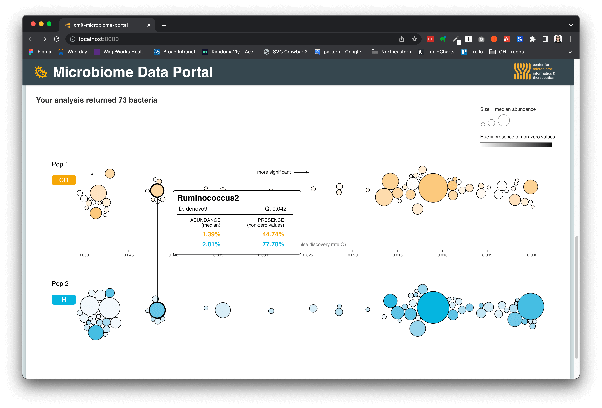

RESPONSIBILITIES
Design, full-stack dev + visualization
ABOUT
Created in collaboration with CMIT, the Microbiome Data Portal combines multiple datasets across 7+ different disease states. The portal allows anyone to visualize bacteria diversity from publicly available scientific studies on the microbiome.
Using the suite of tools on the website, you can:
- Visualize the microbiome abundance of every sample used in a scientific study
- Group the samples by disease state
- Conduct a real-time, client-side univariate analysis between two population groups
- Visually investigate the relationships between abundance, presence, and statistical significance
Go to site